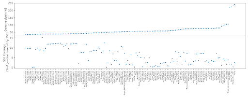

Research Areas
Variant Function using multi-omics integration

We used comprehensive multi-omics integration approach to uncover the functional role of the noncoding variant rs55705857, which is strongly associated with increased risk of IDH1-mutant low-grade glioma. By combining genomic fine-mapping, epigenomic profiling (including ATAC-seq, histone modifications, and Hi-C), transcriptomic analyses, and in vivo mouse modeling, the researchers demonstrated that this variant resides within a brain-specific enhancer that, when altered, disrupts OCT2/4 transcription factor binding. This disruption enhances enhancer-promoter interaction with the MYC oncogene, leading to its upregulation. Functional assays in genetically engineered mice confirmed that the variant significantly accelerates gliomagenesis. This work exemplifies how multi-omics integration can move beyond association to mechanistically link noncoding genetic variation to cancer development.
CNA and CNV analysis

Copy number variations (CNVs) and copy number alterations (CNAs) are important forms of structural variation that involve gains or losses of genomic segments and can have significant implications in both normal genetic diversity and disease, particularly cancer. CNV/CNA analysis typically relies on whole-genome or whole-exome sequencing data to detect changes in read-depth and allele frequency across the genome. The study by Abyzov et al. emphasizes the importance of integrating multiple signals—such as read depth and B-allele frequency—to improve the accuracy of CNV detection across different genomic contexts, including complex or repetitive regions. Additionally, recent advances have focused on increasing the resolution and scalability of CNV/CNA analysis, enabling more precise detection of events at both large and small genomic scales. These developments contribute to better interpretation of genomic instability, identification of driver alterations in tumors, and support the use of CNVs as biomarkers in clinical genomics.
Repeat Function
Simple sequence repeats (SSRs), also known as microsatellites, play important roles in genome structure, evolution, and adaptability, particularly in pathogenic organisms. In Phytophthora species, SSRs exhibit distinct distribution patterns, with dinucleotide repeats such as TG/CA being the most prevalent. These patterns are conserved across different repeat classes, including tri- and tetranucleotide motifs, and are generally associated with consistent GC content. Interestingly, telomeric regions in these genomes show non-canonical repeat motifs, indicating lineage-specific adaptations. SSR-rich regions are often located near genes involved in virulence, including effector proteins, carbohydrate-active enzymes, transporters, and transcription factors. This suggests that repeats contribute to a “two-speed genome” architecture, where dynamic, repeat-rich regions facilitate rapid evolution and functional diversification, particularly in genes critical for host-pathogen interactions.